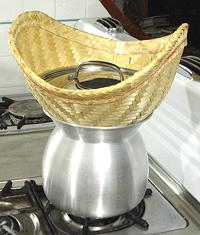
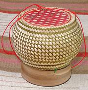

SAFARI
Users
See also:
RICE - Varieties, Forms & Processing- Buying and Storing Rice
- Cooking Rice
- Conventional Steaming - pan or rice cooker.
- Microwave Steaming
- Steamed Sticky Rice - Laotian rice.
- Pilaf Rice
- Risotto Rice
- Spanish Paella & Arroz
Buying & Storing Rice
Buying:
These days you go to a store that sells the kind of rice you want to cook and buy a bag. I usually buy 10 pound bags of common varieties of white rice, but 5 pound bags of brown rice that must be used more quickly. Well, yes, in some Red States you may have to order the more exotic ethnic varieties on the Internet. When you get really experienced you may develop a strong preference for particular brands of particular varieties of rice.Storing:
You need to store rice in an air-tight container in a cool dry place. The "air tight" is to keep bugs out - note that they can bore through thin plastic bags, you need 2-mil minimum to keep them out. If you notice tiny black dots in the rice, those are beetles. If there aren't too many you can shake the rice in a wire strainer and the beetles, being far smaller than rice grains, will fall through. Also, most bugs are lighter than rice, so you can float them out. It's not that the bugs aren't nutritious, but some of your guests may be a little squeamish on this mater. especially the vegans.White rice can last 1 year to 50 years depending on milling and variety. Brown rice is highly variable. Some will go rancid in just a few months (depending also on how long it as stored before you bought it) and others will last a year or more. If you smell rancidity, discard it. Products of rancidity, besides smelling bad and tasting awful, are suspected carcinogens.
In India, top grade Basmati rice is sometimes aged for as much as 50 years (and becomes very high in price). The aging is done in the husk, and the rice is milled before packaging and selling. The longer the age the fluffier the rice will be when cooked (though beyond 2 years you are looking at a steeply diminishing return on investment). For this kind of storage you need a container that will allow limited air circulation but still exclude tiny bugs. Most "Aged Basmati" sold in North America is aged for one year.
Classes & Varieties of Rice
For more than you ever wanted to know about Classes and Varieties of rice, visit our RICE page - but here are a few commonly found in North American kitchens (any of these can be found in brown as well as white):
- Thai Jasmine: An aromatic long grain rice suitable for cuisines of North America, non-Mediterranean Europe, Southeast Asia (including the Philippines) and southern China.
- Indian Basmati: An aromatic very long grain rice best for cuisines of India, Persia, Anatolia, the Near and Middle East and anywhere pilafs are made,
- California Rice: Japanese style rice. The most common is Calrose, but I prefer Kokuho Rose. Use this rice for the cuisines of Japan, Korea and northern China. In a pinch it'll do for Italian, but more questionable for Spanish.
- Long Grain Rice: What rice is for most in North America. It's a fairly undistinguished Patna type rice originating from around Patna in India. Major growing regions are in the US South, primarily Arkansas, Louisiana and Texas. Any relationship to the famous Carolina rice is questionable.
Cooking Rice
Conventional Steaming
As far as I'm concerned. this is the way to cook plain rice, though some ethnicities and households insist on other methods. This method can be used with either a sauce pan (for 1 to 4 servings) or an Asian rice cooker (larger batches). Note that the times and measures give here are specific to white rice. Brown, red and black rice take somewhat to a lot longer, and more water. See our RICE page for details on specific varieties.
This method does demand that you know your rice, your pan and your stove very well - or your rice and your rice cooker for larger batches. A little practice is needed to get these things down perfect.
- Rinse your rice by measuring it into a fine mesh strainer and shaking it briskly under hot running water. Let it drain well, and then tilt the strainer a bit to get it thoroughly drained.
- Pour a dab of olive oil into the saucepan and wipe it around the bottom and sides with a small bit of paper towel. Sprinkle in some salt, depending on ethnicity of the meal. No or very little salt for Southeast Asia and Japan, a little more salt for India, China, Europe and North America. Brown, red and black rice need more salt than white rice to taste right.
- Pour in the drained rice.
- Measure in cold water appropriate for the type of rice and the
amount being made (a little more for very small batches). At this point
we have three possibilities:
- Rice Cooker: Cover and push the button. It will shift to "warm" mode when the rice is done. When done, let it sit for at least 10 minutes. How does it know when the rice is done? When all the free water is gone the temperature at the bottom of the pot will start to rise. At a preset temperature it turns to "warm" (or off for my antique Hitachi rice cooker - I have to push the "warm" button by hand).
- Saucepan: Bring to a boil uncovered (this is so you can see when it reaches a boil - covered you'll forget). The moment it boils cut the heat to barely a simmer and cover tightly. In about 15 to 20 minutes turn off the heat entirely and let sit for about 10 minutes.
- Saucepan: This is the method I use, and I most often use it for as little as a single serving (1/3 cup rice). Set the pot, tightly covered, on a cold burner, preferably a solid iron one or with a heat spreader. Set flame to the point where a fairly strong simmer would be maintained (just the center flame on my burner). At exactly 25 minutes (your time may vary) I turn it off and let it sit for about 10 minutes.
Note that the 10 minute rest period is important to properly distribute moisture, and it will also allow the rice to come unstuck from the pan.
Microwave Steaming
Science has shown that "nuking" food does far more damage to its nutritional value than conventional cooking. Nonetheless, households with children (including often husbands) demanding instant gratification consider a microwave essential. I haven't tried this, having no microwave (or children), but the instructions given here are widely published. The microwave is said to work very well - easy, almost foolproof - and the rice won't stick to the bowl or burn. Naturally, as with every other rice cooking method you need to adjust the water and cooking time to your exact rice and the power of your microwave.
- Long Grain, Medium Grain and Uncle Ben's "Converted" Rice: Use 1 cup of rice and 2 cups of water or broth in a 3-quart microwave container. Cover with wax paper and microwave on high for 5 minutes, then on medium for about 13 minutes.
- Brown Rice Use 1 cup of rice and 3 cups of water or broth in a 3-quart microwave container. Cover with wax paper and microwave on high for 8 minutes, then on medium for about 20 minutes.
Steamed Sticky / Glutinous / Sweet Rice
 Laotians (including the Laotian people in Issan, Thailand) and the Tai Khuen of eastern Shan State, Burma, are the only peoples where sweet / glutinous rice is the main rice. In other cultures it is mostly reserved for sweets. Glutinous rice is much favored in Laos for it's ability to be made up into wads used to pick up sauces and other foods. A wad of rice is their main, and often only, eating utensil. Properly made, the finished rice should be quite dry, but very sticky.
This rice is traditionally made in a steamer of the type shown in the photo. Both parts were purchased from an Asian market in Los Angeles, and the lid borrowed from a convenient pot. Other steamers can be used if you don't have this rig.
1. Purchase Thai or Laotian long grain sweet rice
(not all sweet rice is suitable). This is easily available on-line or
in the large Asian markets here in Los Angeles.
2. Rinse the rice well until the water runs clear
3. Soak the rice in water to cover by a couple of
inches. Soaking time depends on the age of the rice, 4 to 8 hours. If
it came from Thailand to North America, it is probably old enough by
now to take the full 8 hours or overnight.
4. Wrap the rice in cheese cloth. Some on-line outlets
that sell the rice and steamers have wide Thai cheesecloth suitable for
this use.
5. Load the steamer with the wrapped rice and put a lid
over it. If using the official cone shaped basket, make sure the basket
doesn't touch the boiling water.
6. Bring to a boil and steam at a light boil until
tender, about 45 minutes.
7. Remove the rice from the cheese cloth and
wash the cloth for future use.

Sticky Rice is immediately removed from the steamer into one or more
covered Rice Baskets and sent to the table. These baskets may be of
individual or family sizes. The inner chamber of the photo specimen
basket is 4-1/2 inches diameter and will hold 4 cups of rice. The
string serves to keep the lid with the basket and to hang the
basket from a convenient hook. Baskets of this sort are available
on the Internet, shipped directly from Thailand.
Pilaf Rice
Pilafs are the main way of cooking rice in Anatolia and from North Africa through the Near and Middle East, Persia (where it originated), Central Asia, and northwestern India. A modified form can be found in some parts of Italy and southern France.
There are actually a number of variations on the pilaf method, but this one works pretty well for me. Pilaf is a little tricky because you have to get the water just right from the start, and there's no way to correct it later. This takes some practice to get just right. so don't plan to serve your first try to important guests.
If there are other major ingredients I usually do this in a 3-1/2 quart multi-ply sauté pan with a tight fitting lid, using 1 cup of rice and a bit shy of 2 cups of water (or broth if the recipe calls for that). If there are no other major ingredients a 2 quart sauté pan works better.
- Chose a very long grain Basmati type rice, Lacking that, Thai Jasmine rice, or lacking even that, an American long grain rice can be used (but not "converted" rice), though it will not have that desirable basmati aroma. Try to always use the same type of rice, the same pan and the same stove burner the same way once you get the amount of liquid and the timing just right.
- Rinse the rice well, then soak in warmish water for 1/2 hour or a little longer.
- Most pilafs have other ingredients than rice. At this point you fry up the other ingredients, or prepare them however the recipe calls for. This preparation should end with no free liquid in the pan.
- Drain rice very well. Stir it into the pan with the required amount of water, and some butter (about 1 T per cup of rice).
- Bring to a boil, then turn the heat down to a slow simmer. Cover tightly and let cook for about 12 minutes (your timing may vary). Do not open the lid until the time is up.
- Turn off heat. Open the lid and drape a paper towel over the pan, then return the lid and let stand for a good 10 minutes (the paper towel is to keep water from dripping off the lid into the rice).
Risotto Rice
Risotto is primarily made in northern Italy, but some also in southern France. I usually do this in a 2 quart sauté pan using 1 cup rice, 1 T of olive oil or butter and just shy of 2 cups broth.
- Do Not Rinse or pre-soak rice used for risotto. Starch adhering to the surface of the grains is important to the end result.
- Select a medium grain Risotto type rice at least 6 months old (Carnaroli, Maratelli and Vialone Nano are considered best, Arborio not so much - too touchy). Lacking that, a medium grain Egyptian or Spanish rice, or a California rice such as Kokuho Rose or Calrose can be used, with somewhat less authentic results.
- Chop ingredients for a soffritto if the recipe calls for one. At minimum some onion, but garlic, celery and parsley are often included.
- Heat some olive oil or butter in the risotto pan (about 1 T per cup of rice) Fry the soffritto (if any) until onion is translucent. Add the rice and fry stirring for about another 3 minutes.
- Add half the broth called for by the recipe. Stir as you add the broth and very often as the broth is absorbed. As needed stir in half the remaining broth and continue stirring very often until the rice is creamy and tender (when only 1/4 cup of broth remains, you are permitted to stir it all in - otherwise you will never finish).
Spanish Rice - Paella & Arroz
In Spain, where rice cultivation was first introduced into Europe, rice is cooked differently from the rest of the world - in an open pan, with no stirring. Cooked in a shallow stove top pan it is "Paella". Cooked in an earthenware cazuela, in the oven or on the stove top, it is "Arroz".
The proper Paella pan is a shallow pan with sloping sides made from regular steel (the kind that rusts). La Espanola Meats carries these in 14 sizes from 9-1/3 inches to 51-1/4 inches (1 plaza to 200 plazas). Stainless pans are available, but not as good due to the poor heat conductivity of stainless.
- Select a "Valencia", "Bomba" or "Calasparra" paella rice. These are super absorbent medium grain rice varieties particularly suited to the Spanish methods of cooking. They can be purchased from on-line sources such as La Espanola Meats of Harbor City, CA (Los Angeles) or La Tienda of Williamsberg, VA, Amazon.com and many others.
- DO NOT rinse or soak rice for paella or Arroz.
- Generally the recipe will call for a bunch of other ingredients. These are cooked in the pan first, fried, then simmered, and will produce an amount of broth for cooking the rice. Note: in Spain meats and seafood are never both included in the same paella.
- When the other ingredients are ready, stir in the rice, about half the volume of rice as there is broth in the pan (adjust broth if necessary).
- Simmer uncovered until rice is cooked tender. Do not disturb the pan until the rice is done. The result should be sticky, but all separate grains, not creamy as in risotto.